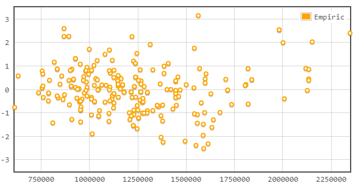
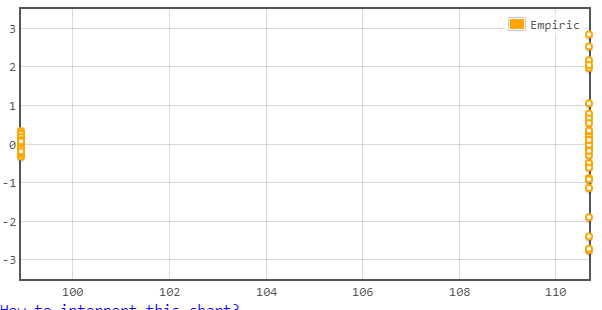
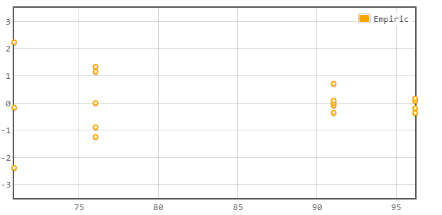

Fitted values vs. residuals plot allow you to verify the residuals (nmodel errors) follows the same distribution
for all regression values. This is an important assumption in linear regression inference.
Reasons for not following the same distribution could be:
1. Goodness of fit - model does not fill data well
2. Missing interaction or other explanatory variables
Common plot shapes:
1. Data fits expected distribution well:

2. Examples were residuals distribution is not equal for all fitted values:

